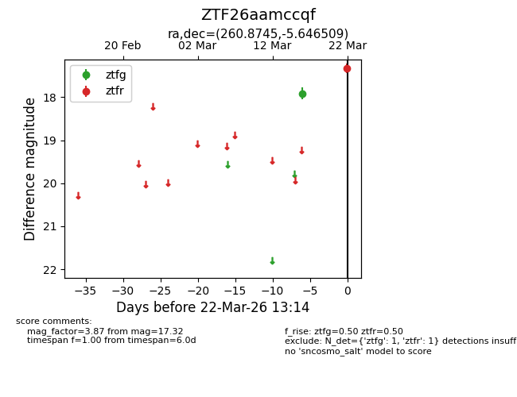
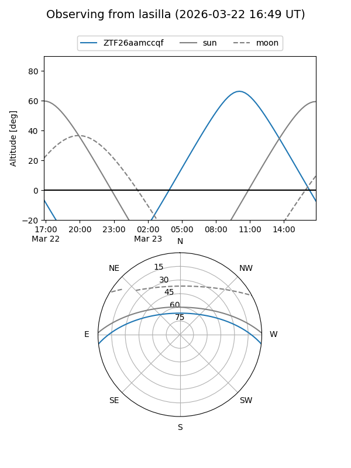
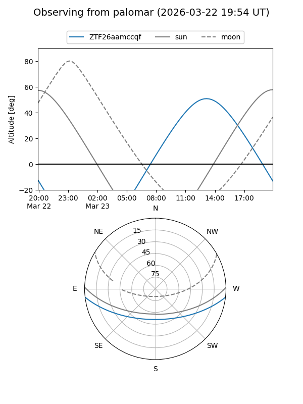

ZTF26aamccqf
Target ZTF26aamccqf at 2026-03-22 13:16
Aliases and brokers:
FINK: link
Lasair: link
ALeRCE: link
alt names
ZTF26aamccqf (ztf,fink_ztf)
Coordinates:
equatorial (ra, dec) = 260.8745,-5.64651
equatorial (HMS+DMS) = 17:23:29.89,-05:38:47.43
galactic (l, b) = (17.3437,+16.66032)
Flags:
Photometry:
last ztfg=17.91, ztfr=17.32
1 ztfg, 1 ztfr detections
Lightcurve

Visibility


Additional plots